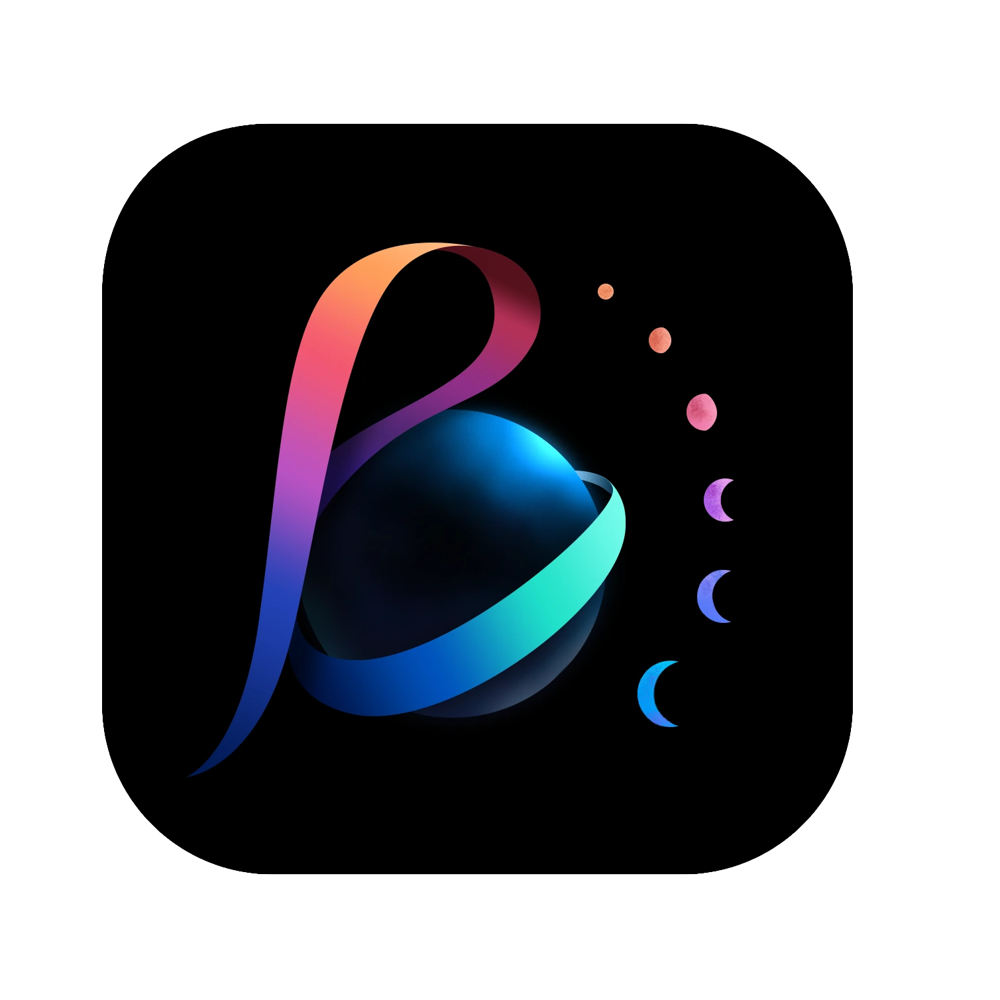

BSTVC让时空可解释BSTVC OFFICIAL FILM · 90 SECONDS
让时空异质性，转化为可解释证据。
90 秒了解 BSTVC 如何连接局部时空解释、全局贡献分析与动态预测，并将贝叶斯时空变系数模型转化为可复现的桌面研究工作流。
正在准备最快的兼容版本…
只载入当前选择的一档 MP4，不与网页影片同时预载。

BSTVC让时空可解释90 秒了解 BSTVC 如何连接局部时空解释、全局贡献分析与动态预测，并将贝叶斯时空变系数模型转化为可复现的桌面研究工作流。
只载入当前选择的一档 MP4，不与网页影片同时预载。